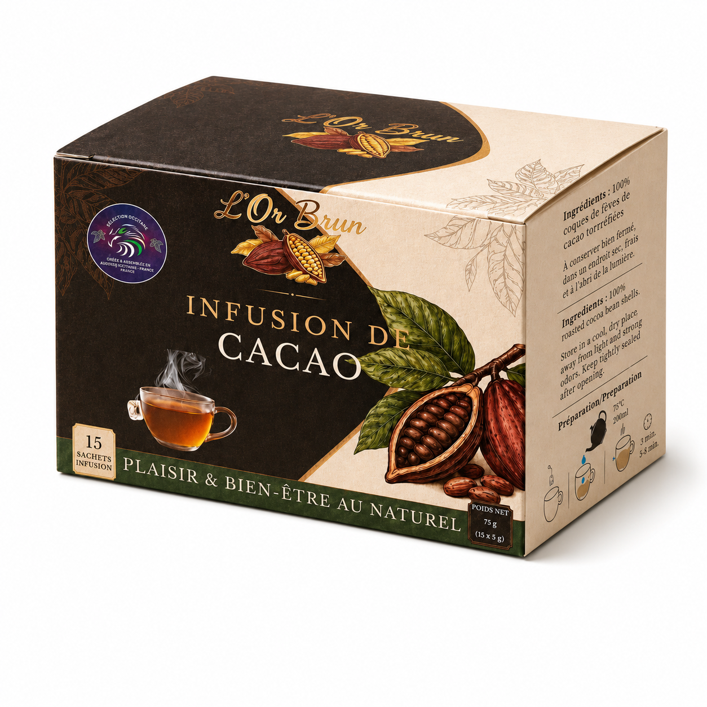

15 sachets · 12 €
Infusion de cacao
Une boisson chaude originale aux notes naturellement chocolatées, issue de coques de fèves de cacao torréfiées.

Pause cacao
Une autre manière de découvrir le cacao
Cette infusion convient aux épiceries fines, hôtels, salons de thé, restaurateurs et amateurs de boissons gourmandes. Elle se prépare simplement avec de l’eau chaude et peut être dégustée nature ou accompagnée de lait.
- 15 sachets
- Notes chocolatées
- Boisson chaude
- Stock actualisé
- Produit
- Infusion de cacao KIC
- Format
- 15 sachets — 75 g
- Prix
- 12,00 €
- Livraison
- France et Europe